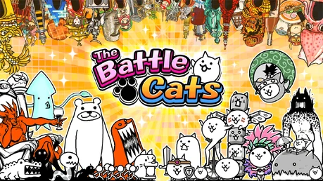

Sobre the battle cats
The Battle Cats es un juego de defensa de torres (tower defense) gratis y muy popular. Creado por PONOS Corporation, te permite formar un ejército de gatos raros y divertidos. Tu objetivo es conquistar el mundo viajando a través del tiempo y el espacio para destruir la base enemiga.